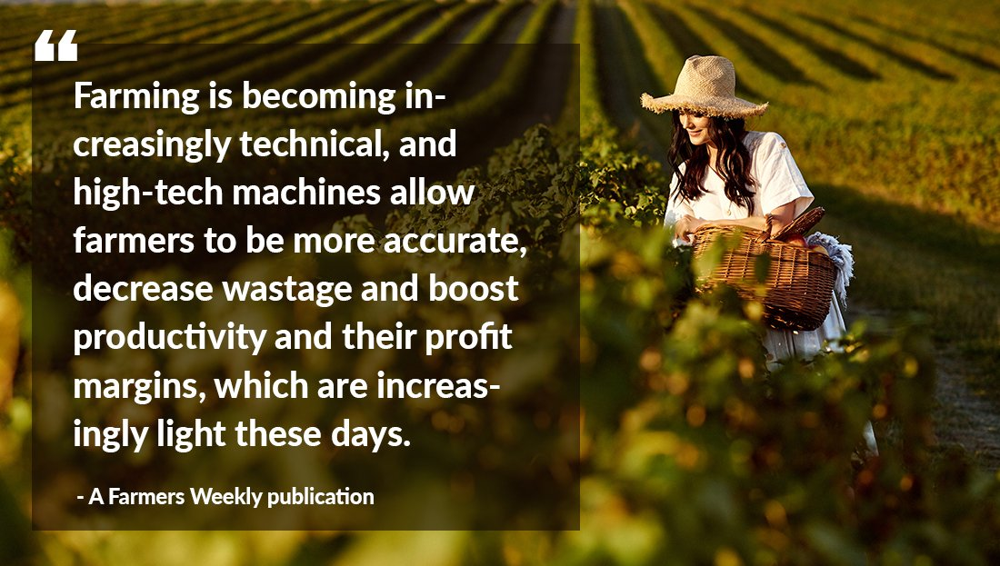

A new era for India’s agritech sector.
The agriculture sector contributes 6.4% of the world’s total economic production.
The importance of agriculture in the Indian economy cannot be over-emphasised.
An estimated 58% of India’s population is dependent on agriculture as the primary source of livelihood and agriculture contributes 17% to the national GDP.
You can check detailed blogs on agriculture Technology here....
Blogs...